Our Running Groups
We have multiple running groups that focus on different speeds and distances, so regardless of where you are on your running journey there's a group that you can run with.
Runners are welcome to move between groups at any time, and you can choose which group to run with at each session based on what works best for you. If your goals change, no problem! If you want to try something different, that's great! We're all here to support each other and have fun.
The key on the right shows the relative group speeds. Point to a group you're interested in to find out more.
All our running groups are led by England Athletics qualified runners - they will either hold the LiRF (Leader in Running Fitness) or CiRF (Coach in Running Fitness) qualification. On the occasions when a group leader is absent another EA qualified LiRF/CiRF will be in attendance.
In addition to the groups detailed here we sometimes have specific running groups for events such as the Great South Run.
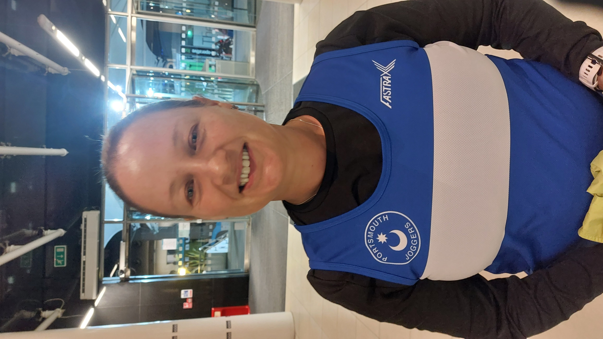
Teresa has been a member of PJC for over 15 years and in this time has completed around 80 marathons and ultras, she has a background in sports coaching and holds a BSc in Sports and Exercise Science.
Endurance
Sub 8:15 min/mile (Sub 5:08 min/km)
Led by Teresa Baverstock.
The Endurance group offers steady-paced 6-7 mile (10-11 km) runs on both Tuesday and Thursday evenings, with the bulk of the group running at around 7:30-8:15 min/mile (4:40-5:08 min/km).
The group aims to run at a steady pace and keep moving continuously, with faster runners looping back to keep the group together. Some members are also working towards championship or good-for-age marathon qualifying times.
During the lead-up to targeted races, Thursdays may incorporate longer interval training sessions, which is the opposite to the usual pattern for many other groups, where intervals are more commonly done on Tuesdays. This gives runners options.
Racers
Sub 8:30 min/mile (Sub 5:15 min/km)
Tony Conway and Kate Lewis have the pleasure of leading the Whacky Racers.
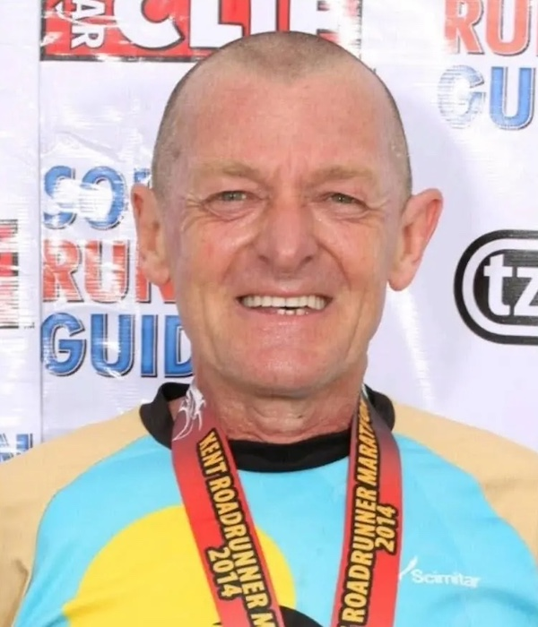
Tony has been a member of PJC since 2002, having taken up running after leaving the Navy. He is an
extremely experienced runner, having completed over 100 marathons!
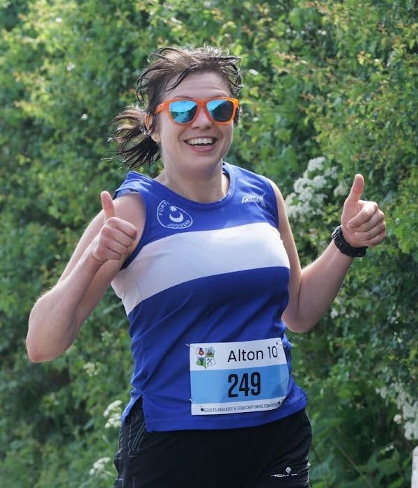
Kate's been running for around 12 years and joined PJC when she moved to Portsmouth in 2019. She
liked the club so much that she became the club's Chair in 2024. Kate is also the club's Hampshire Road Race League Ladies' Team captain!
The Racers are one of the speediest groups at PJC, and our schedule is typically:
-
Tuesdays: Speed work, such as 800 metre reps, pyramids, or hill reps.
-
Thursdays: A longer run, usually between 7-9 miles.
The group pace is sub 8:30 min/mile (sub 5:15 min/km). Faster runners will loop back so that we all stay together.
Starting in January, we typically target our training towards running a spring marathon, working to a
structured plan to build endurance and stamina. You are, of course, welcome to join in whether you are signed up
to a spring marathon or not! 😀
Whatever we're doing, we always aim to have fun, so come give us a try!
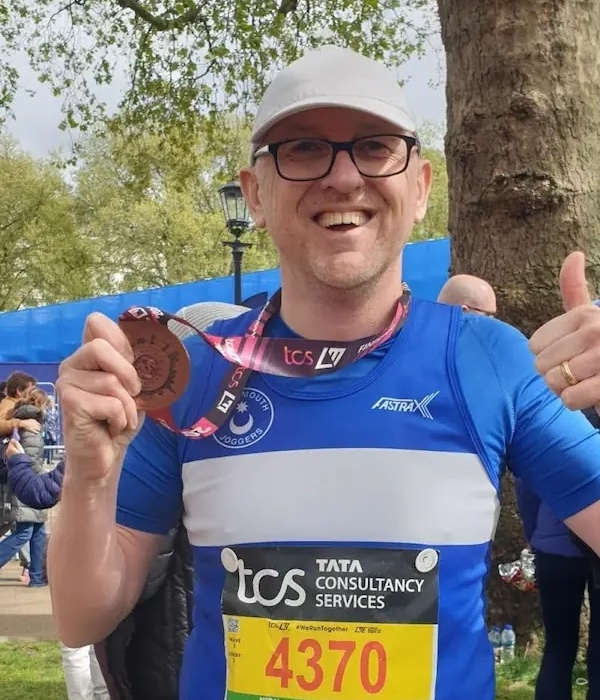
Pete joined PJC in early 2016 to train for the Great South Run, with the initial plan
of running it, checking it off his list, and stopping. However, here he is, 9 years later, leading a group
after completing 4 marathons, 1 ultra, and many other races.
Pacers
8:30-9:00 min/mile (5:15-5:35 min/km)
Led by Pete Birch.
The PJC Pacers are positioned just behind the Whacky Racers in terms of speed within the club's training
structure. We often train as one group, especially during our Tuesday speed work sessions.
- Tuesdays: Speed work. We go through a series of speed work sessions designed to give your running that extra
kick. Anyone can join in these sessions, as the pace is determined by your own race goals.
- Thursdays: We typically run 6-8 miles (10-13 km) at a group pace of 8:30-9:00 min/mile
(5:15-5:35 min/km). The goal is to be able to maintain this pace without pushing yourself to
your maximum effort. It's all about building up stamina.
Pace Cadets
9:00-10:00 min/mile (5:35-6:15 min/km)
Led by Gina Reeve, Richard Sullivan and Scott Andrews.
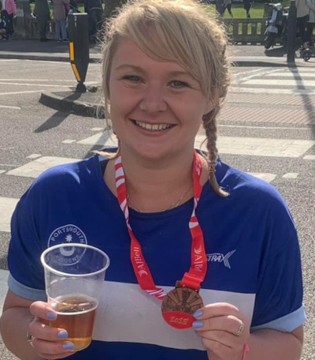
Gina joined PJC in 2022.
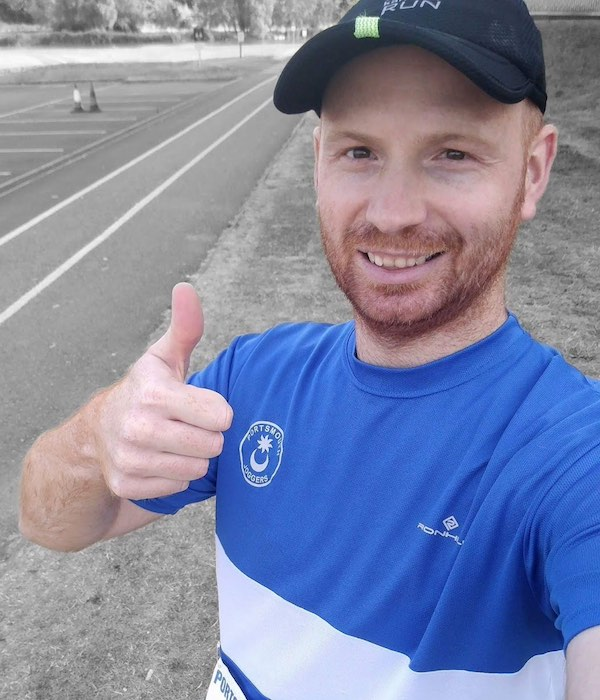
Richard joined PJC in 2017.
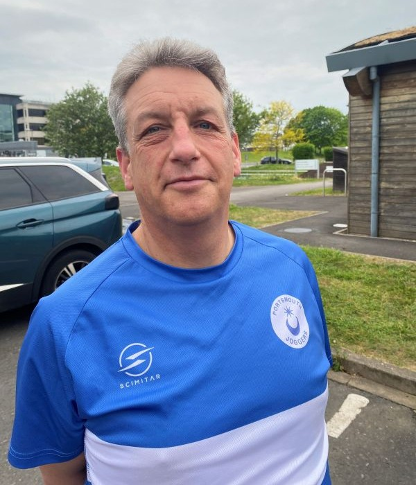
Scott started running in 2018 when he couldn't think of a decent excuse not to join his wife at parkrun. Having been bitten by the running bug, he's since completed a number of half marathons, and joined PJC in 2025. Scott is also the club's Recruitment Officer.
The Pace Cadets training sessions are structured to cater to a variety of running needs and goals.
We operate a mix of interval and speed sessions, designed to improve pace and endurance, and longer runs typically ranging from 5-7 miles (8-11 km). These longer runs are paced between 9:00-10:00 min/mile (5:35-6:15 min/km), providing a steady and enjoyable run for all participants.
In the summer, the Pace Cadets usually embark on a 14-week training plan for the Great South
Run (GSR). Our goal is to help members complete the race in a target time of between 1 hour 20 minutes and 1
hour 40 minutes. We may train for other events during the year, depending on what group members are looking to
achieve.
Join us for a supportive and motivating running experience, whether you're looking to improve your speed,
increase your distance, or train for a specific event. We look forward to running with you!
Inbetweeners
10:00-11:00 min/mile (6:15-6:50 min/km)
Led by Steve Hyson and Katie Hall.
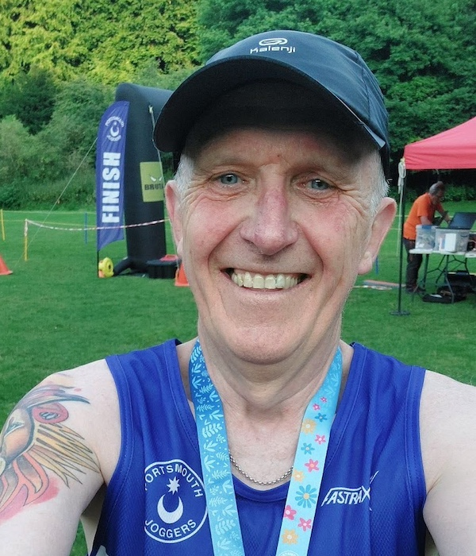
Steve started running in 2018 and joined PJC in late 2019. He has been leading The Inbetweeners since January 2022. Steve is also the club's Health and Safety Officer.
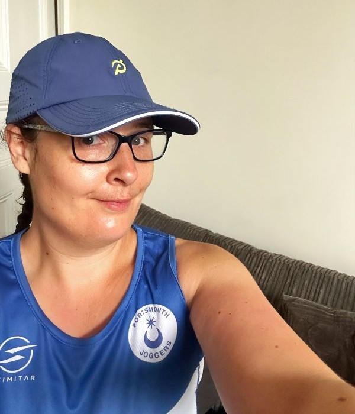
Katie joined PJC in June 2024 with the hope of being able to run the Great South Run. Fast forward nearly two years and she has participated in many of the HRRL races and loves being an active member of the club. Katie is also the club's Membership Secretary.
The Inbetweeners are for those running at around 6:15-6:50 min/km (10:00-11:00 min/mile), meaning you can complete parkrun (5 km) in around 31-33 minutes. Anyone is welcome to run with the group regardless of their pace, as we all look out for each other.
- Tuesdays: Interval training of some type which lasts an hour and normally covers 6.5 to 7 km (4 to 4.5 miles)
- Thursdays: A base run of 8 to 9 km (5 to 5.5 miles). Occasionally the group joins up with other groups for a joint run, typically this is when we do an
away run
i.e. the groups choose somewhere else to run other than our home location of Lakeside.
The group also joins in with the annual training plan in preparation for October's Great South Run.
Next Step
11:00-12:00 min/mile (6:50-7:30 min/km)
Led by Sue Clarke and Sue Hyson.
 Sue Clarke joined PJC in 2016 via the Couch to 5K group as she
wanted to lose weight, and very quickly recognised the mental health benefits of running. She's now a group leader as well as Deputy
Chair and Welfare Officer for the club.
Sue Clarke joined PJC in 2016 via the Couch to 5K group as she
wanted to lose weight, and very quickly recognised the mental health benefits of running. She's now a group leader as well as Deputy
Chair and Welfare Officer for the club.
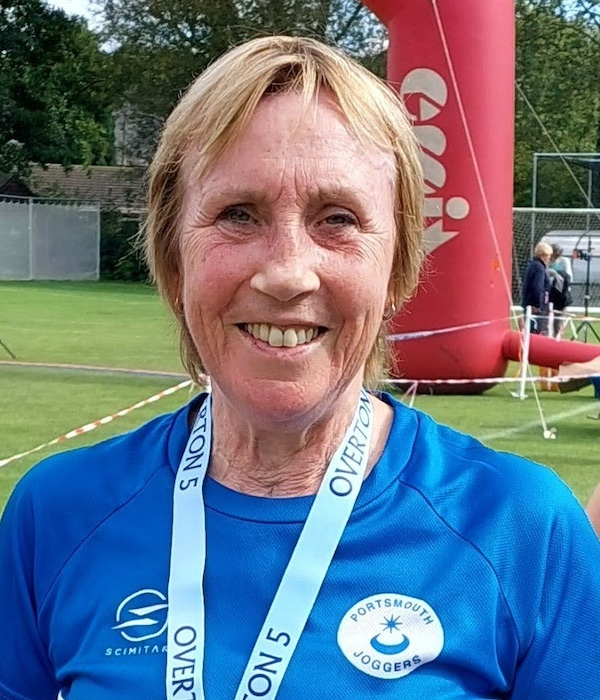
Sue Hyson joined PJC in 2019 after she completed the 5 km Race for Life because she wanted something to encourage her to continue running. She's now a group leader as well as the Club Secretary.
Next Step is the ideal group for those who have completed Couch to 5K and want to continue their running journey, or for those who want to enjoy a chatty run at 11:00-12:00 min/mile (6:50-7:30 min/km).
- Tuesdays: On alternate Tuesdays we do interval training, designed to help you increase stamina and staying power. On the following week we do a 4-5 mile (6-8 km) run, the same as Thursdays.
- Thursdays: We typically run 4-5 miles (6-8 km). The group aims to run this continuously without stopping to walk.
Social Group
The Social Group is led by Ally Smith and Celia Oxley.
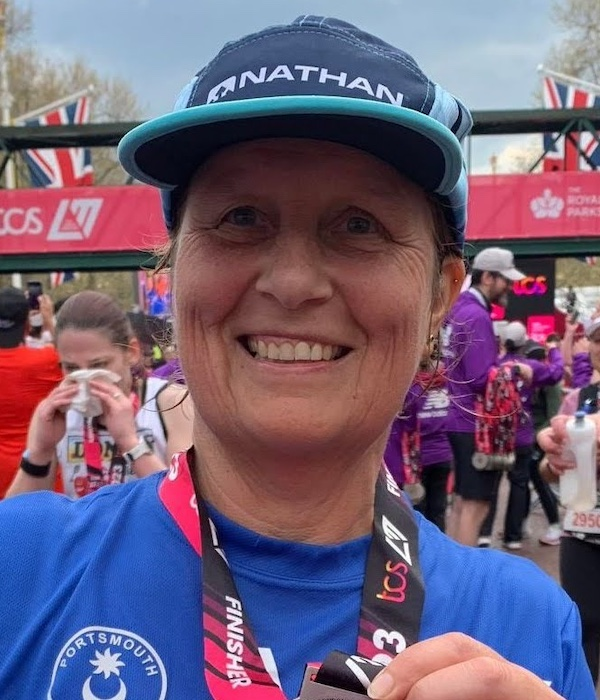
Ally
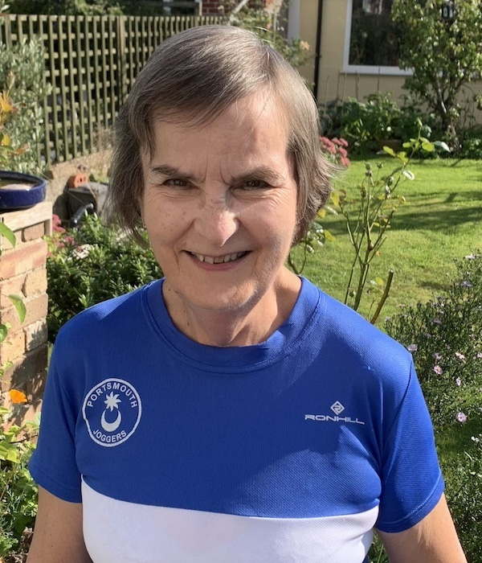
Celia
This group is mainly aimed at slower runners who like to run and chat and for those who need to walk from time to time. We do loop backs, if needed, to keep the group together.
It's an ideal first step for those people who are not quite sure if they are confident enough to move on to the Next Step after completing Couch to 5K.
During the summer months (June, July, August) we venture out to explore the beautiful countryside and seafront that we are fortunate enough to live near to. Runs will start at 6:30 p.m.; please refer to the Portsmouth Running Group Facebook page for details each week.
During the rest of the year we run from Lakeside. On Tuesdays we run at 7 p.m. and on Thursdays at 6 p.m.
If you fancy a run/walk or gentle plod with a group of like-minded people, why not come and join us?
Other Qualified Run Leaders
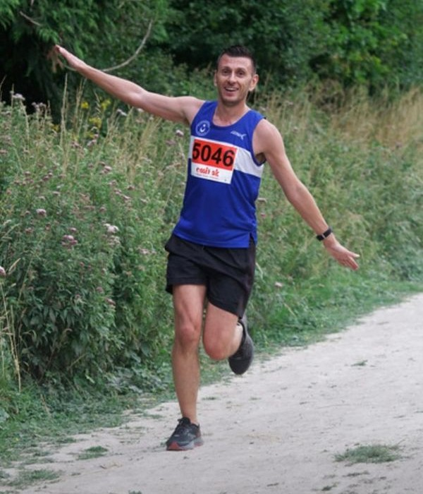
Pete Coote
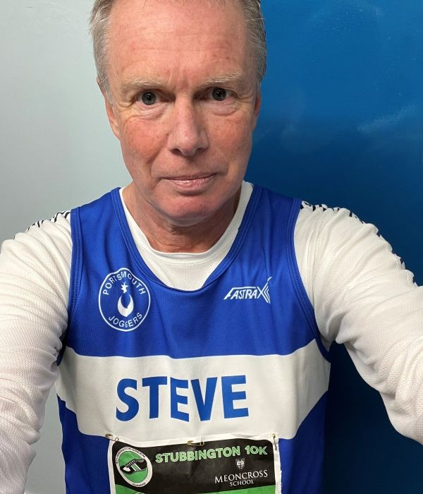
Steve Wooldridge
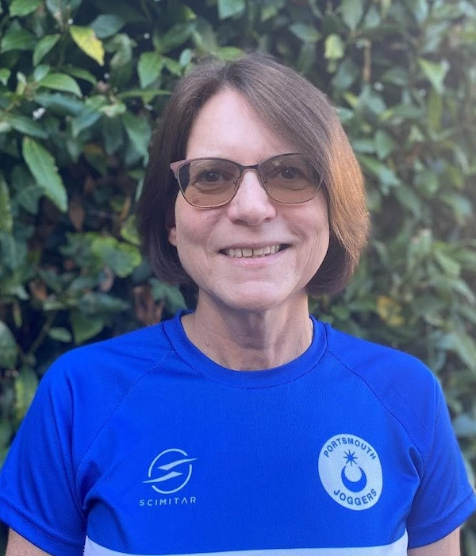
Sarah Stone
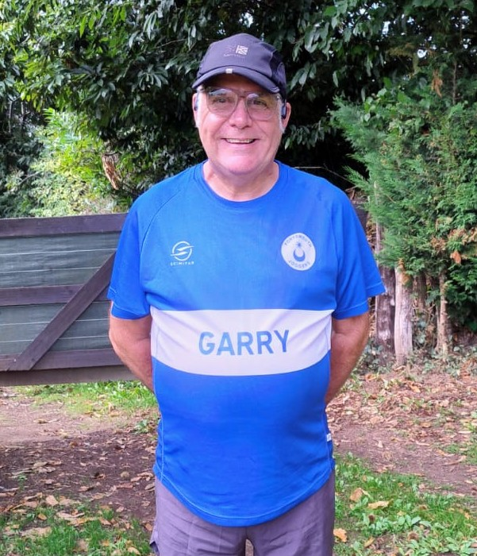
Garry Batten